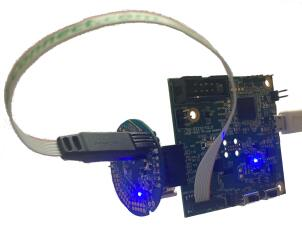

BL654 Sensor Board
概述
BL654 传感器板硬件支持 Ezurio BL654 模块，该模块采用 Nordic Semiconductor nRF52840 ARM Cortex-M4F CPU。
该传感器板具有以下特性：
ADC
CLOCK
FLASH
GPIO
I2C
MPU
NVIC
PWM
RADIO（低功耗蓝牙和 802.15.4）
RTC
Segger RTT（RTT 控制台）
SPI
UART
WDT

有关 BL654 模块的更多信息，请访问 BL654 website [2]；有关 USB-SWD 编程器的更多信息，请访问 USB-SWD Programmer website [4]。
硬件
支持的功能
bl654_sensor_board 开发板支持下列硬件功能。
说明
The list of supported hardware features was not generated. Run a full documentation build for the required metadata to be available.
连接与 IO
LED
LED1（蓝色）= P0.16（低电平有效）
传感器
BL654 传感器板上有一个 Bosch BME280 温度/湿度/气压传感器，通过 I2C 连接到 BL654。
SCL = P0.27
SDA = P0.26
有关 Bosch BME280 传感器的更多信息，请访问 Bosch BME280 sensor website [1]。
传感器供电
传感器可以直接由纽扣电池供电，也可以由 UART 引脚上提供的电压供电，开发板接受 1.8v-3.3v 的电压。注意，如果在使用电池的同时连接了 UART/调试器，UART/调试器的电压（如果它不能自动检测/调整）必须与纽扣电池电压相差在 0.3v 以内，以免激活 nRF52840 芯片内的抑制二极管，或可能反向为电池供电。
要通过 UART 由外部电源为开发板供电，必须用焊锡短接焊桥 SB1。
编程与调试
说明
The list of supported runners was not generated. Run a full documentation build for the required metadata to be available.
bl654_sensor_board 开发板配置的应用程序可以按常规方式构建、烧录和调试。有关构建和运行的更多详细信息，请参阅 构建应用程序 和 运行应用程序。需要使用外部调试器/编程器，通过 Tag-Connect TC2030-CTX 线缆连接；可以使用 Ezurio USB-SWD 编程器板或 Segger JLink 编程器对 BL654 传感器板进行编程和调试。
烧录
如果使用外部 JLink，请按照 Nordic nRF5x Segger J-Link 页面中的说明安装和配置所有必需的软件，更多信息请参阅 烧录。然后按常规方式构建和烧录应用程序（详见 构建应用程序 和 运行应用程序）。如果使用 Ezurio USB-SWD 编程器板，请访问 pyOCD website [3] 了解该软件的详细信息及安装方法。
以下以 Hello World 应用程序为例。
首先，运行你喜欢的终端程序以监听输出。注意，需要将外部 UART 连接到 BL654 传感器板的 UART；如果使用 Ezurio USB-SWD 编程器板，可以将 BL654 传感器板插到 UART 排针上。也可以使用 FTDI 线缆，但 I/O 线和电源线的电压必须在 1.8v 到 3.3v 之间，不要将带 5v 电源线的 FTDI 线缆连接到 BL654 传感器板。
J3 UART 连接器引脚定义（所有引脚均以工作电压 Vdd 为参考）：
Pin No. |
名称 |
说明 |
方向 |
|---|---|---|---|
1 |
GND |
GND |
(N/A) |
2 |
RTS |
UART 请求发送（RTS）引脚 |
OUT |
3 |
VDD |
电源电压（需要用焊锡短接 SB1） |
(N/A) |
4 |
RXD |
UART 接收引脚 |
IN |
5 |
TXD |
UART 发送引脚 |
(N/A) |
6 |
CTS |
UART 清除发送（CTS）引脚 |
IN |
$ minicom -D <tty_device> -b 115200
将 <tty_device> 替换为 BL654 传感器板所在的端口。例如，在 Linux 下为 /dev/ttyACM0。
BL654 传感器板需要外部编程器进行编程，任何带 9 针 ARM 调试端口的 SWD 编程器都可以配合 Tag-Connect TC2030-CTX 线缆使用。如果使用 Ezurio USB-SWD 编程器板，请将线缆连接到 P1，并确保编程器板设置为以 3.3v 为目标板供电。
J1 Tag-Connect SWD 引脚定义：
Pin No. |
名称 |
说明 |
方向 |
|---|---|---|---|
1 |
VDD |
工作电压 |
(N/A) |
2 |
SWDIO |
串行线数据输入/输出引脚 |
IN/OUT |
3 |
nRESET |
模块复位引脚 |
IN |
4 |
SWCLK |
串行线时钟输入引脚 |
IN |
5 |
GND |
GND |
(N/A) |
6 |
SWO |
串行线输出引脚 |
OUT |
然后按常规方式构建并烧录应用程序。
# From the root of the zephyr repository
west build -b bl654_sensor_board samples/hello_world
west flash
调试
如果使用外部 JLink 调试器，请参阅 Nordic nRF5x Segger J-Link 页面，了解如何调试基于 Nordic 的开发板。如果使用 Ezurio USB-SWD 编程器板，可以使用 pyOCD 进行调试。
在 BL654 传感器板上测试 Bluetooth
许多 Bluetooth 示例都可以在 BL654 传感器板上运行。试试这些示例：